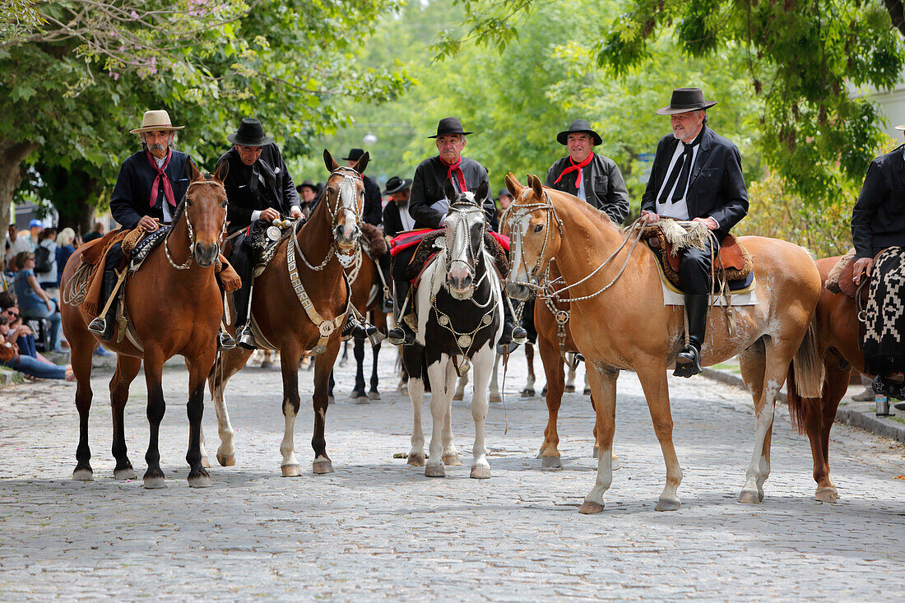
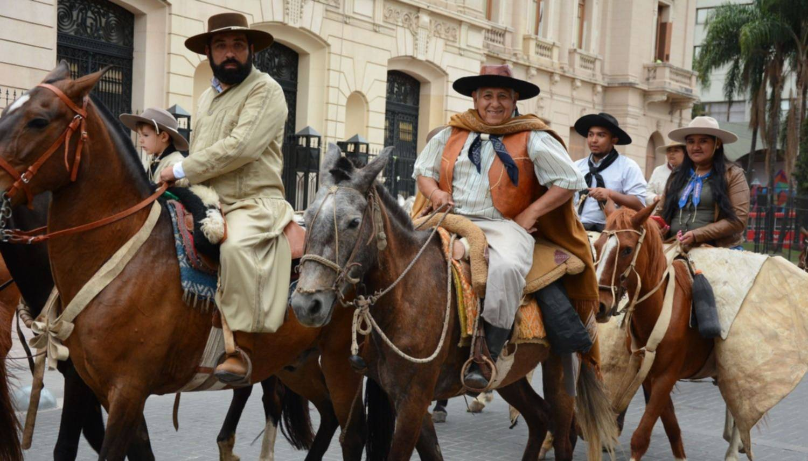
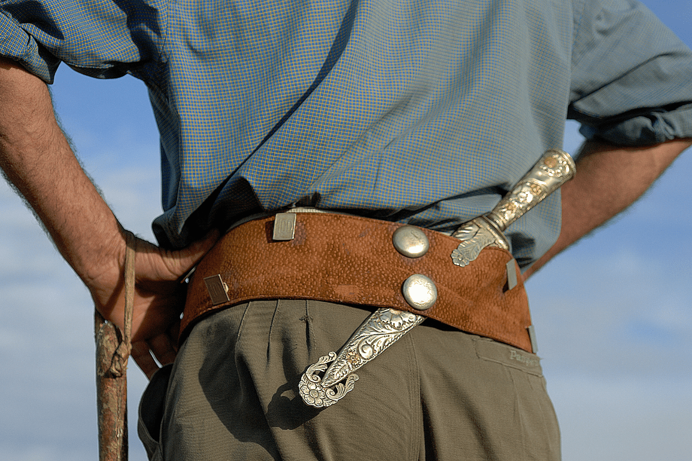
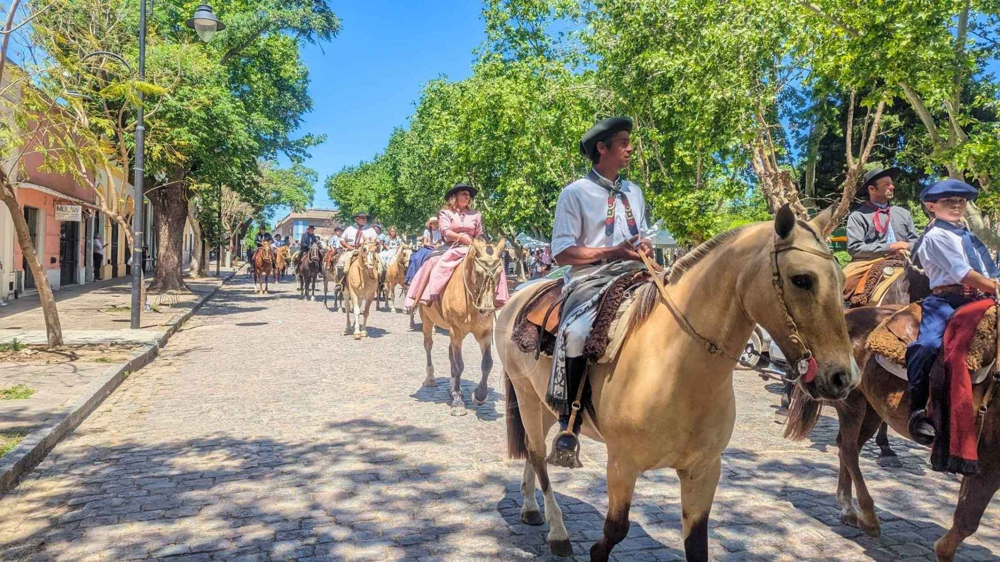

A town dedicated to "cowboy" culture, featuring silverwork, traditional horse riding, and folklore.
Explore Gaucho Traditions

In San Antonio de Areco, we study the 'Gaucho'—the nomadic horseman who defined the Argentine identity.
The "Gaucho" was originally a social outcast. It wasn't until the 1920s (with the book Don Segundo Sombra) that the "dirty nomad" was rebranded as a "noble hero.
What to Expect
Hand-carved silver knives, leather goods, and high-speed horse-riding displays called sortija.
The Gaucho "Field Day" (Día de Campo)

Visiting a traditional estancia (ranch) is the best way to see a working gaucho in their element. Many offer full-day experiences that demonstrate the deep bond between the rider and their horse.
You can witness destrezas criollas (creole skills) such as the carrera de sortija (ring race), where a rider at full gallop must thread a needle through a small hanging ring.
Some ranches, like Estancia El Ombú de ArecoClick to open side panel for more information, feature "Doma India," a traditional, non-violent horse taming technique.
Every field day centers around a massive asado (barbecue). Gauchos typically cook meat over open fires, often using just their facón (traditional knife) to eat.
Artisan Crafts & Silversmiths

Areco is famous for its master artisans, particularly its silversmiths (plateros) and leatherworkers (sogueros), who create the elaborate gear that gauchos wear to show their status.
Taller de Plateria & Orfebreria Mariano DraghiClick to open side panel for more information is a world-renowned workshop where you can see how silver rastras (belts decorated with coins) and facones are crafted.
Local leatherworkers specialize in soguería, the art of braiding raw cowhide into incredibly strong and intricate lassos, whips, and bridles.
You’ll also find shops selling bombachas de campo (loose-fitting trousers), boinas (berets), and ponchos, which remain the standard daily wear for many locals.
The Festival of Tradition (Fiesta de la Tradición)

If you can time your visit for early November, you will witness the most important gaucho festival in Argentina.
Over 1,000 gauchos from across the country ride into town in full traditional dress, parading through the cobblestone streets toward the main square, Plaza Ruiz de ArellanoClick to open side panel for more information.
At the Criollo Park Nature ReserveClick to open side panel for more information, you can watch jineteadas, a high-intensity Argentine rodeo where gauchos must stay on a bucking horse for several seconds.
The evenings are filled with peñas (musical gatherings) where locals play the guitar and dance the chacarera or zamba until the early hours.
What to Expect
Hand-carved silver knives, leather goods, and high-speed horse-riding displays called sortija.